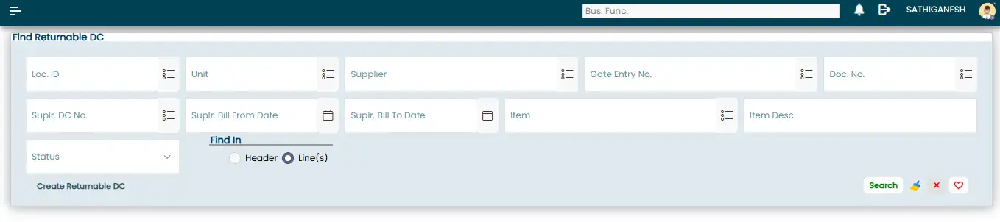
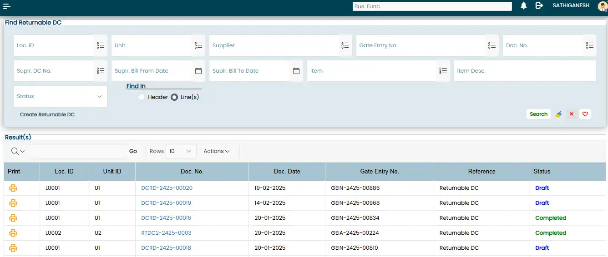
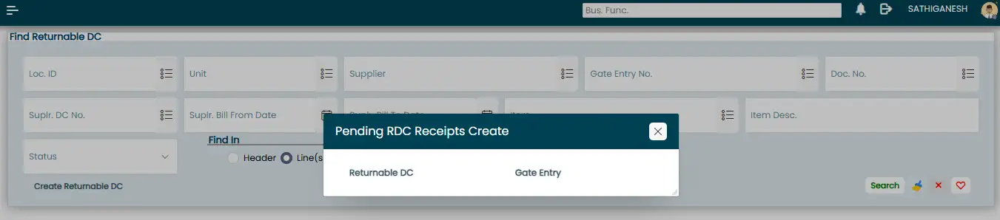
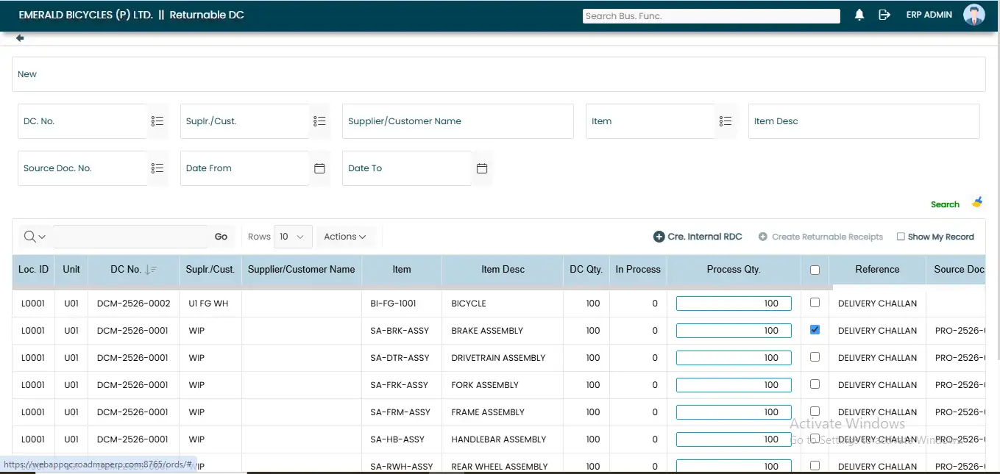
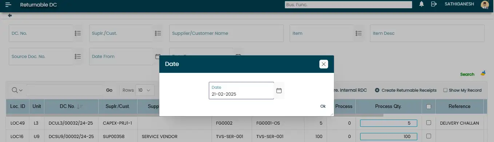
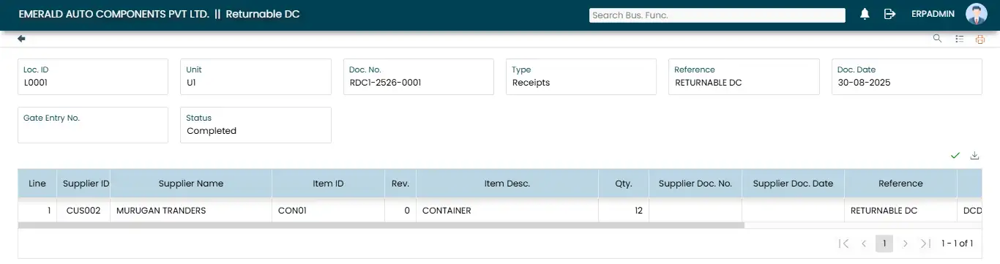
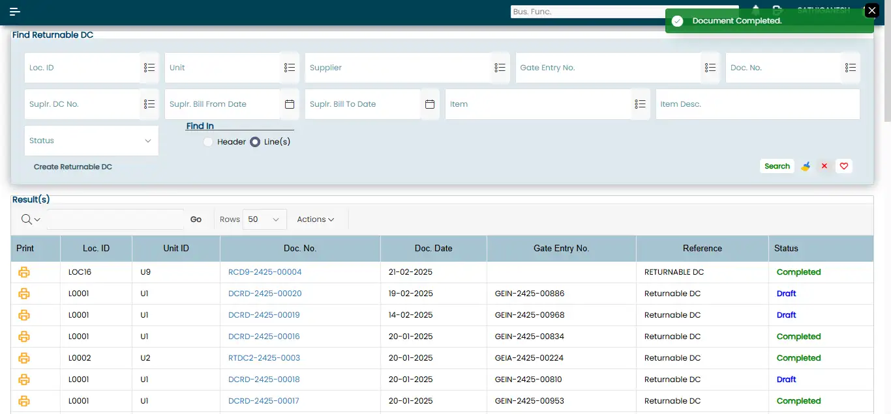
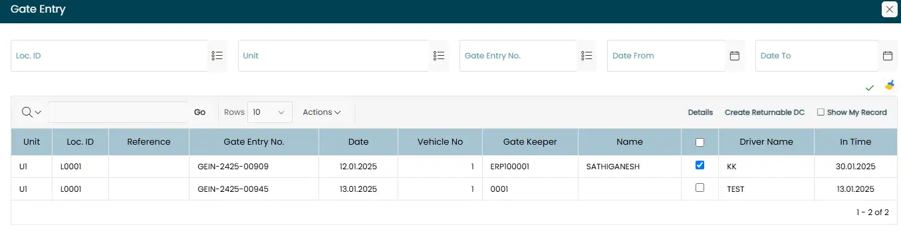
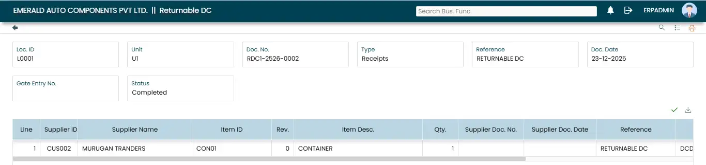
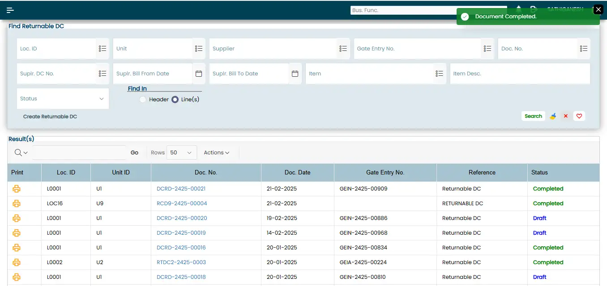

<div data-category="Gate Entry" data-title="Returnable DC" data-updated="January 23, 2026" data-contributors="RoadmapIT" data-breadcrumb="Home,Gate Entry,Returnable DC">
  <div class="page-content">
    <h5>Returnable DC</h5>
    <p>A Returnable DC documents the movement of goods which are expected to be returned to the sender after their use. For ex: manufacturer sending out special tooling or molds to a supplier for job work, expecting them to be returned after the job is completed.</p>

    <h5>Navigation path:</h5>
    <p class="fs-6">Supply Chain Management \ Gate Entry \ Transaction \ Returnable DC</p>

    
    <ul style="list-style-type: none; align-content: center">
      <li class="mouse-icon">Search screen displays the list of Returnable DC with the relevant details and its status</li>
      <li class="mouse-icon">Click on Search to filter all the records.</li>
    </ul>

    
    <ul style="list-style-type: none; align-content: center">
      <li class="mouse-icon">User can filter the respective documents by entering the search parameters at the header.</li>
      <li class="mouse-icon">Using Search, system displays the results relevant to the search parameters entered.</li>
      <li class="mouse-icon">On-click; the corresponding transaction record will be displayed.</li>
      <li class="mouse-icon">
        Using
        
        icon, entered search parameters can be cleared.
      </li>
      <li class="mouse-icon">
        To close the screen, use
        <i class="bi bi-x fs-4 mx-2 text-danger"></i>
        icon.
      </li>
      <li class="mouse-icon">
        Click on
        <i class="bi bi-speedometer2 fs-4 mx-2 text-muted"></i>
        "Create Returnable DC" button to create the Returnable DC from pending documents.
      </li>
    </ul>

    
    <ul style="list-style-type: none; align-content: center">
      <li class="mouse-icon">Returnable DC – Select this option to create Internal RDC and Returnable receipts</li>
      <li class="mouse-icon">Gate Entry – Select this option to create RDC from Gate entry</li>
      <li class="mouse-icon">Click on Returnable DC</li>
    </ul>

    
    <ul style="list-style-type: none; align-content: center">
      <li class="mouse-icon">Select the document and click on Create Returnable Receipt</li>
    </ul>

    
    <ul style="list-style-type: none; align-content: center">
      <li class="mouse-icon">Select the date and Click on Ok</li>
    </ul>

    
    <ul style="list-style-type: none; align-content: center">
      <li class="mouse-icon">Click on Complete and the document will be completed.</li>
    </ul>

    
    <ul style="list-style-type: none; align-content: center">
      <li class="mouse-icon">Click on Gate Entry</li>
    </ul>

    
    <ul style="list-style-type: none; align-content: center">
      <li class="mouse-icon">Select the document and click on Create Returnable DC button.</li>
    </ul>

    
    <ul style="list-style-type: none; align-content: center">
      <li class="mouse-icon">Click on Complete and the document will be completed.</li>
    </ul>

    
  </div>
</div>
